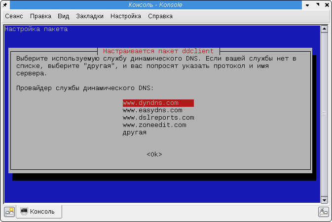
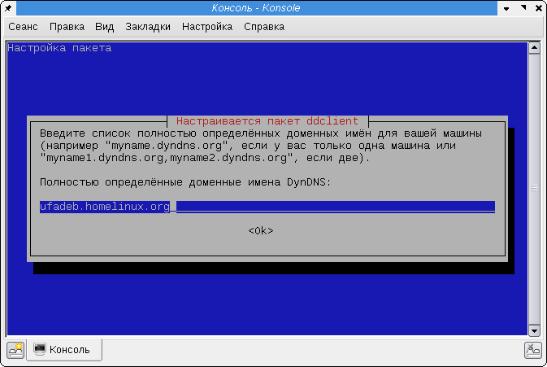
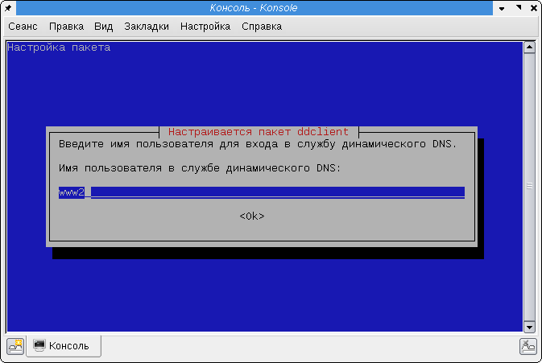
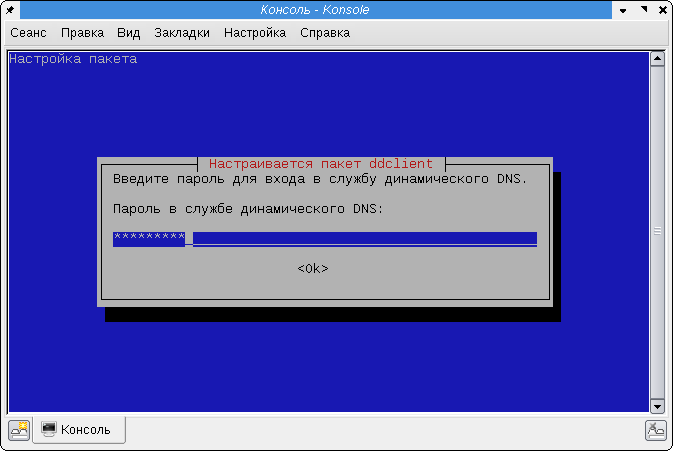
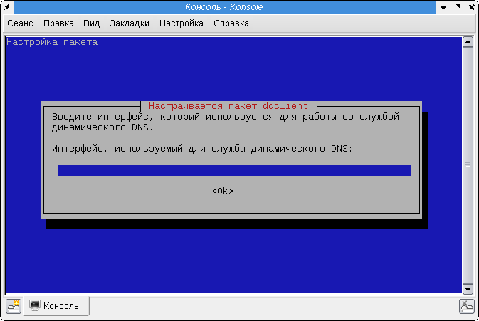
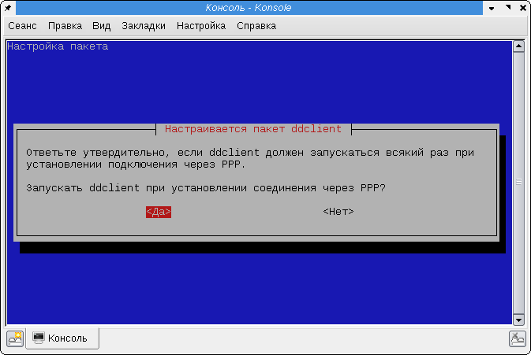
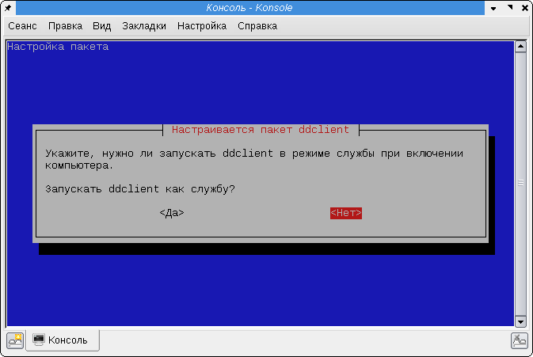

Давно хотел застолбить себе домен, пусть даже и третьего уровня, чтобы можно было без лишних проблем легко попадать на свой домашний Linux-сервер.
Проблемы состоят во-первых в том, что у этого сервера не постоянный IP-адрес, он выдаётся при подключении по PPTP. А во-вторых, на безлимитном тарифе провайдер не предоставляет услугу постоянного IP-адреса.
До сих пор обходился самописным скриптом, который автоматически при поднятии линка заливает текстовый файл с IP-адресом по FTP на бесплатный веб-хостинг.
После непродолжительного гугления на тему динамических DNS, был найден сервис http://www.dyndns.com/. Долго откладывал настройку, но сейчас решил настроить и описать процесс.
На этом сайте можно заказать за деньги DNS-хостинг, мониторинг серверов и многие другие услуги. Есть также бесплатный DNS-сервис, ограниченный 864000 запросами к DNS в месяц и бесплатный домен третьего уровня, позволяющий производить динамические обновления зоны.
Для начала регистрируемся на сайте и подтверждаем регистрацию по почте.
Выбираем доменное имя второго уровня, где будем размещать свою зону. Полный список доменов второго уровня, в которых Вы можете застолбить свой домен третьего уровня, можно посмотреть здесь: http://www.dyndns.com/services/dns/dyndns/domains.html Я выбрал домен homelinux.org.
Затем подписываемся на услугу Dynamic DNS, где выбираем тип узла - custom.
На этом сайт можно покинуть, больше он нам не понадобится.
Устанавливаем ddclient:
# aptitude install ddclient
Сразу во время установки запускается мастер настройки ddclient с ncurses-интерфейсом:
1. Выбираем сервис, на котором зарегистрировали учётную запись. Я выбрал www.dyndns.com
2. Вводим имя домена, который выбрали при регистрации на DynDNS:
3. Вводим имя пользователя, с которым регистрировались на сервисе DynDNS:
4. Пароль для этой учётной записи:
5. Указываем имя интерфейса, к IP-адресу которого будет привязываться выбранное доменное имя. Можно оставить это поле пустым, тогда IP-адрес будет определяться автоматически, исходя из того, какой IP-адрес был использован клиентом при подключении к сервису.
6. Здесь можно указать, будет ли запускаться ddclient при запуске PPP-соединений и отключаться при закрытии PPP-соединений.
7. Если выбрать запуск ddclient в режиме демона, он будет автоматически запускаться при загрузке системы и работать постоянно. Если вы выбрали этот режим, то в предыдущем пункте можно отключить запуск демона при поднятии PPP-канала связи.
Если вы ошиблись в настройках, запустить мастер настройки ddclient снова можно в любое время, для этого можно воспользоваться следующей командой:
# dpkg-reconfigure ddclient
Все указанные мной настройки уместились в двух файлах. /etc/ddclient.conf:
# Configuration file for ddclient generated by debconf # # /etc/ddclient.conf pid=/var/run/ddclient.pid protocol=dyndns2 use=if, if= server=members.dyndns.org login=www2 password='password' ufadeb.homelinux.org
В этом файле можно указать имя интерфейса, имя и пароль учётной записи на DynDNS и доменное имя, которые вы выбрали при регистрации.
И второй файл - /etc/default/ddclient:
# Configuration for ddclient scripts # generated from debconf on Срд Фев 25 20:17:16 YEKT 2009 # # /etc/default/ddclient # Set to "true" if ddclient should be run every time a new ppp connection is # established. This might be useful, if you are using dial-on-demand run_ipup="true" # Set to "true" if ddclient should run in daemon mode run_daemon="false" # Set the time interval between the updates of the dynamic DNS name in seconds. # This option only takes effect if the ddclient runs in daemon mode. daemon_interval="300"
В нём можно указать режимы запуска и период обновления информации:
Мне понадобился несколько более экзотический случай настройки: мне нужно обновлять две доменные записи и привязывать их к двум интерфейсам. С помощью мастера настройки и обычных режимов работы ddclient, предусмотренных скриптами в /etc/init.d/ddclient это настроить нельзя. Поэтому я настроил немного по-другому.
Нужно прописать в файле конфигурации обычные настройки для одного домена, но указать их два. Для каждого домена обновлять записи следует из командной строки, указывая название интерфейса и доменное имя, для которых производится обновление. Теоретически можно было бы вызывать эти скрипты единожды при поднятии PPP-интерфейсов, однако на практике такая схема обновления записей себя не оправдала: если ddclient не срабатывал сразу при поднятии интерфейса, то новых попыток обновить адрес не предпринималось до тех пор, пока PPP-соединение не будет переподключено вновь. Если каждое обновление записей в DynDNS требует личного контроля, автоматизацией это не назовёшь. Поэтому был выбран другой вариант - обновление записей по cron'у.
Сначала я отключил режим демона и режим запуска для PPP-соединений:
run_ipup="false" run_daemon="false" daemon_interval="1m"
Настроил в файле /etc/ddclient.conf два доменных имени:
pid=/var/run/ddclient.pid protocol=dyndns2 server=members.dyndns.org login=www2 password='password' ufadeb.homelinux.org stupin.homelinux.org
И настроил запуск ddclient по cron'у каждую минуту:
# crontab -e
Добавив в таблицу две строчки:
* * * * * /usr/sbin/ddclient -file /etc/ddclient.conf -host stupin.homelinux.org -use if -if ppp0 * * * * * /usr/sbin/ddclient -file /etc/ddclient.conf -host ufadeb.homelinux.org -use if -if ppp1
Интерфейсы ppp0 и ppp1 всегда привязаны к определённым соединениям с помощью опции unit демона pppd.
Теперь можно перезапустить демон cron, чтобы он заново считал свои настройки (хотя вроде бы и так он перечитывает их каждую минуту):
# /etc/init.d/cron restart
ddclient хранит текущие настройки в файле /var/cache/ddclient/ddclient.cache, иногда для того, чтобы принудительно обновить настройки на DynDNS-сервере может потребоваться удалить этот файл (ddclient не отправляет запрос на обновление, если текущие настройки интерфейсов совпадают с сохранёнными в этом файле).
Последнее обновление 25 февраля 2009 года.